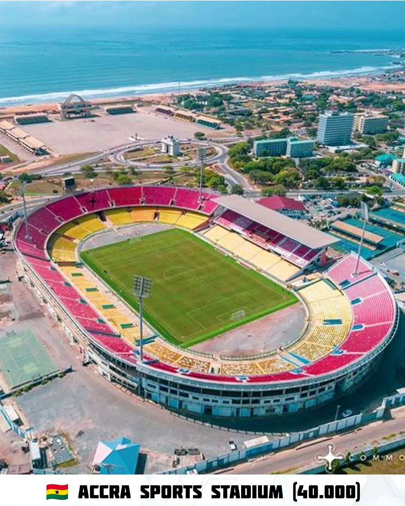

A região de Gana foi habitada há milhares de anos, sendo parte de importantes reinos da África Ocidental. O islamismo chegou à área no século XI, trazendo transformações culturais e comerciais.
Entre os séculos XV e XVIII, reinos Akan como o Ashanti e o Fante se destacaram pelo comércio de ouro e escravos. O Reino de Ashanti, com sua riqueza e organização, foi o mais notável.
A partir de 1471, portugueses, britânicos e outros europeus exploraram a região, nomeada "Costa do Ouro". Durante séculos, foi um centro do comércio de escravos. Em 1874, os britânicos transformaram o território em colônia.
Sob a liderança de Kwame Nkrumah, Gana tornou-se independente em 1957, sendo o primeiro país da África Subsaariana a alcançar tal feito, inspirando movimentos de independência em toda a África.
Após períodos de instabilidade política, Gana estabeleceu uma democracia estável a partir de 1992, sendo hoje um modelo de governança na África.
Gana foi o primeiro país africano a conquistar a independência da Grã-Bretanha, em 1957. Desde 1993, opera como uma república presidencial na Commonwealth, com um parlamento unicameral de 275 assentos. O Parlamento e o Presidente são eleitos diretamente pelo povo para um mandato de quatro anos. O presidente, que é ainda o chefe de estado e o comandante das forças armadas, escolhe um Conselho de Ministros, sujeito à aprovação do Parlamento. A sede do governo é o Castelo de Osu, um antigo castelo de escravos, na costa litorânea da capital nacional, Acra. Gana está dividido em dez regiões, cada uma com jurisdição, governo regional e administração própria, subdivididas em 138 distritos menores que contribuem para a distribuição de energia por meio de unidades administrativas locais. A Câmara dos Chefes, composta por líderes tradicionais que representam linhagens análogas ao sistema do império pré-colonial de Axânti, é responsável pela legislação regional. Esses chefes têm autoridade significativa localmente e atuam como mediadores, com seu papel reconhecido pela Constituição de 1992. A Constituição garante direitos humanos, liberdade de organização política e sindical, com dez partidos e 16 sindicatos registrados. O país está dividido em dez regiões, subdivididas em 138 distritos, que possuem governos regionais e administrações locais para atender à diversidade étnica. A Câmara dos Chefes, formada por líderes tradicionais, desempenha papel importante nas legislações regionais e mediação local. No Índice de Democracia de 2016, da revista britânica The Economist, Gana ocupa a 54ª posição entre 167 países e é considerada uma "democracia defeituosa". No relatório de país da Freedom in the World 2017, da organização não governamental norte-americana Freedom House, o sistema político do país é classificado como "livre". O país é um dos mais livres da África.
Gana é considerado um país subdesenvolvido em que um quarto da população vive abaixo da linha da pobreza. O seu Produto Interno Bruto (PIB) é atualmente de 76 bilhões de dólares, com valor per capita de 2370 dólares. A exploração de recursos naturais e a agropecuária são as duas principais atividades econômicas de Gana. Somente no setor agrícola está alocada uma parcela de 45% da mão de obra do país, além de aproximadamente 41% que desempenham funções do setor terciário, que compreende comércio e serviços.
A produção agrícola de Gana é responsável por gêneros como mandioca, inhame, dendê, cacau e laranja. O setor industrial está diretamente ligado à mineração de recursos como ouro, mineral do qual Gana é hoje o maior produtor africano, diamante, bauxita e manganês, bem como ao petróleo. Outros ramos industriais também desenvolvem atividades no país, como o de processamento de alimentos, madeireiro, cimenteiro e de construção de pequenas embarcações.
O turismo é uma atividade econômica incipiente, mas de grande importância para a geração de receitas para Gana, registrando em média 1 milhão de visitantes internacionais anualmente. Por essa razão, tem sido tratado como uma área estratégica para o crescimento econômico do país.
Pontos turísticos de Gana: A riqueza cultural observada na arquitetura, nos museus e centros culturais, bem como as belezas naturais de Gana, são os principais atrativos turísticos do país. O Parque Nacional de Kakum é uma área de floresta muito procurada pelos turistas e fica localizada na zona costeira do país.
A Mesquita de Larabanga, no norte do país, é outro ponto turístico de Gana e ficou conhecida como a Meca da África Ocidental.
A religião tradicional de Gana como muitas religiões tradicionais africanas é baseada em práticas animistas, que envolvem a crença em espíritos, ancestrais e forças naturais. Essas práticas variam entre os diferentes grupos étnicos do país, mas geralmente incluem rituais, adoração de divindades locais e respeito aos ancestrais. Atualmente as religiões predominantes no país são: religiões cristãs: 71,3%; islâmica: 19,9%; tradicionalismo: 3,2%; nenhuma: 4,5%; outras: 1,1%."
O esporte em Gana é sem duvida uma de suas características culturais mais fortes, com o futebol senso, de longe, o esporte mais popular e que desperta a maior paixão entre os Ganeses. A Seleção Nacional de Futebol de Gana, conhecida com os Black Stars, é uma das equipes mais respeitadas da África, com destaques para participações memoráveis em Copas do Mundo e em Copas Africana de Nações. Eles também tem um gigantesco estadio, onde acontecem as partidas de futebol mais importantes, mas não só se limitando a futebol, mas também a outros esportes, como o rugby.
Mas não é só de futebol que Gana vive, o país também tem uma rica tradição em outros esportes, como o atletismo, o rugby, o basquete e também o boxe, que consta com vários campeões mundiais, como Azumah Nelson, boxista ganense que ganhou o mundial um total de 3 vezes em 2 categorias diferentes, sendo 2 vezes na categoria superpluma e 1 vez na categoria peso pena.
A gastronomia de Gana tem influências de vários países, devido á colonização do continente africano. Sua culinária inclui muitos ingredientes e formas de cozinhas adotadas dos povos que visitaram e permaneceram no continente africano, inclui grãos, vegetais, nozes e frutos do mar. Frutas, legumes e farinha são alguns dos elementos básicos da cozinha do país. O povo de Gana também come bastante fritura, principalmente peixe, além de sopas e guisados, costumes tradicionais do país. Um dos pratos mais tradicionais é o Fufu, um prato no qual se misturas vários tipos de alimento. Fufu é composto de bananas amassada com mandioca, farinha de trigo com leite de dendê acompanhado com um molho feito a base de amendoim ou quiabo.
A bandeira de Gana é composta por três listras horizontais nas cores vermelha, amarela e verde, além de uma estrela preta. A história da bandeira de Gana está vinculada ao processo de independência do país. Ela representa a luta dos africanos pela sua liberdade, com destaque para suas cores, que simbolizam o pan-africanismo. A estrela preta da bandeira de Gana também indica a luta pela liberdade empreendida pela população local.
A vestimenta em Gana reflete a sua rica diversidade cultural e as tradições do país, com uma mistura de roupas modernas e trajes tradicionais que variam de acordo com a ocasião, a etnia e a região. Alguns exemplos mais famosos são o Kente, o Fugu, a Adinkra e a Agbada
Kente: O Kente é um tecido de seda ou algodão com padrões geométricos e cores vibrantes, geralmente usado em ocasiões especiais como casamentos, cerimônias religiosas e eventos formais. O Kente é originário do povo Akan, mas é amplamente apreciado em todo o país.
Fugu: Usado principalmente pelas comunidades do norte de Gana, o Fugu é um tipo de roupa tradicional feita de tecido grosso, geralmente em tons de branco ou creme, e frequentemente usada em cerimônias ou festivais.
Os acessórios em Gana também têm grande importância. Entre os mais comuns estão as joias de ouro, que têm um significado cultural, especialmente entre os povos Akan. Além disso, há o uso de cintos de contas, colares e pulseiras que são frequentemente usados em cerimônias, festas ou eventos culturais.
A África é reconhecida como o berço da humanidade, e a região da África Ocidental, incluindo Gana, é fundamental para a compreensão da evolução humana.
Espécies como o Homo habilis e o Homo erectus viveram nessa região, desempenhando um papel importante na história evolutiva.
Populações da África Ocidental, incluindo Gana, possuem características genéticas únicas. Um exemplo é a alta prevalência do gene da anemia falciforme, que confere resistência parcial à malária.
A pigmentação mais escura da pele é outra adaptação evolutiva, protegendo contra a radiação solar intensa e preservando nutrientes essenciais como o folato.
Os primeiros habitantes da região desenvolveram ferramentas de pedra e técnicas agrícolas que transformaram o modo de vida humano.
Plantas como o sorgo e o milhete foram domesticadas na região, marcando um avanço significativo na segurança alimentar e no desenvolvimento cultural.